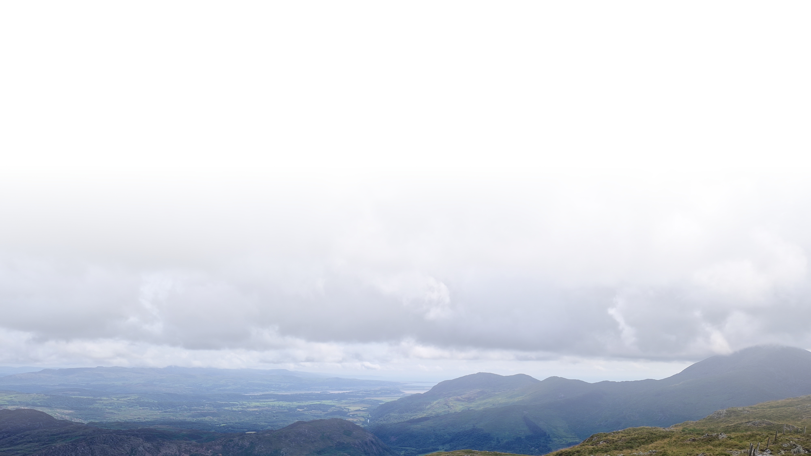
Scaling machine vision for environmental monitoring
From Foundation Models to Label-Efficient Learning; MVEO workshop 2026
Olof Mogren, RISE Research Institutes of Sweden

From adaptive to automated ecosystem management
- Traditional ecosystem management: monitor → model → decide → act → repeat.
- Systems under rapid change: data-to-decision lag!
- Needed: autonomous sensing with fast and precise automated analytics

Bottlenecks in automated ecosystem management
- Autonomous sensors generate massive data streams
- Need scalable, reliable models (SDMs, large-scale EO products)
- Expert annotations are scarce and expensive
- Need label-efficient ML (sparse/weak labels, privileged info, active learning, zero-shot models)
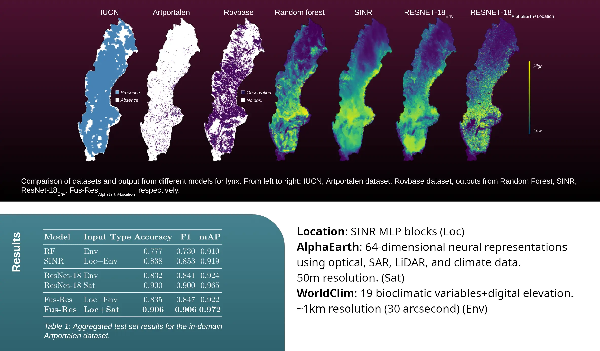
Foundation models for species distribution

Planetary SDMs with satellite embeddings
- OCELOT
- From regional to global
- Training on ~2 billion GBIF records across 100,000 taxa
- High-resolution global maps (e.g., 10 m habitat suitability from satellite embeddings) 
- Downstream priors for camera traps and acoustic sensors

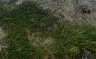
From 10m to 6cm resolution
- Eelgrass:
- Marker species for coastal ecosystem health
- Nutrient pollution sensitiveness
- Sedimentation sensitiveness
- Temperature sensitiveness
- Foundation species
- Erosion protection
- Carbon sequestration
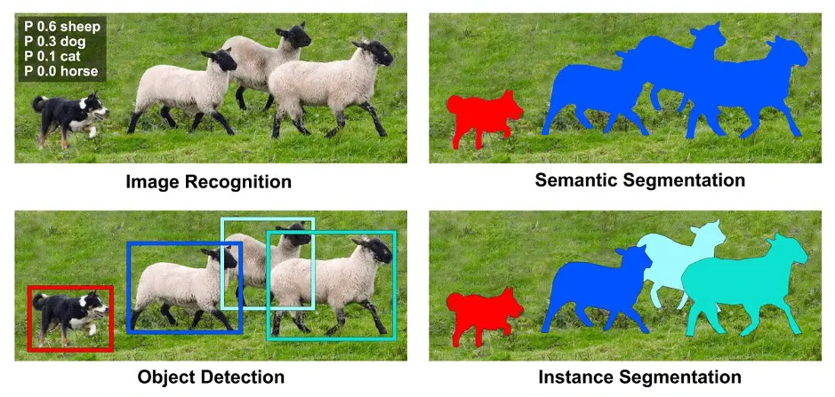

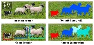
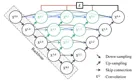
Semantic segmentation without masks
- Semantic segmentation
- U-net architecture
- Supervision
- Point-based high-quality annotations
- Geospatial low-information annotations
Learning using privileged information
- Point-based readings
- Low noise
- Depth

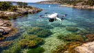
Drone data for seafloor analysis
- Orthomosaics from drone footage
- Collected yearly since 2017
-
Sensitive to weather, reflections, light, depth
-
Current practice: semi-automatic analysis using ArcGIS
- Collaboration between Gothenburg University and the County administrative boards in Västernorrland and Västra Götaland
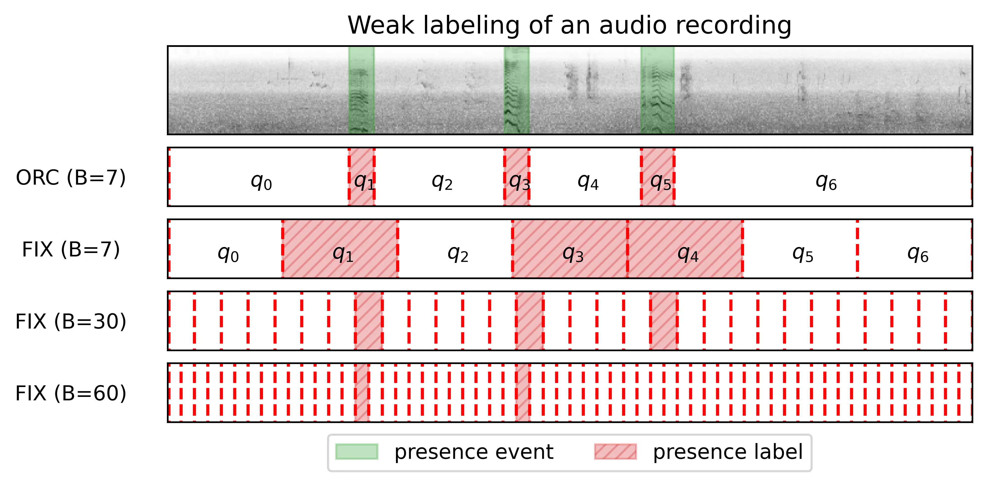
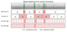
Active annotation, audio and video.
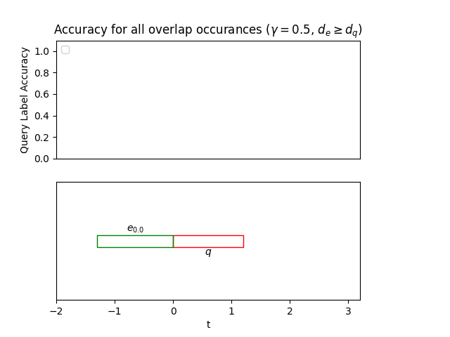
Accuracy of a one-dimensional annotation

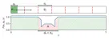
Accuracy of a one-dimensional annotation
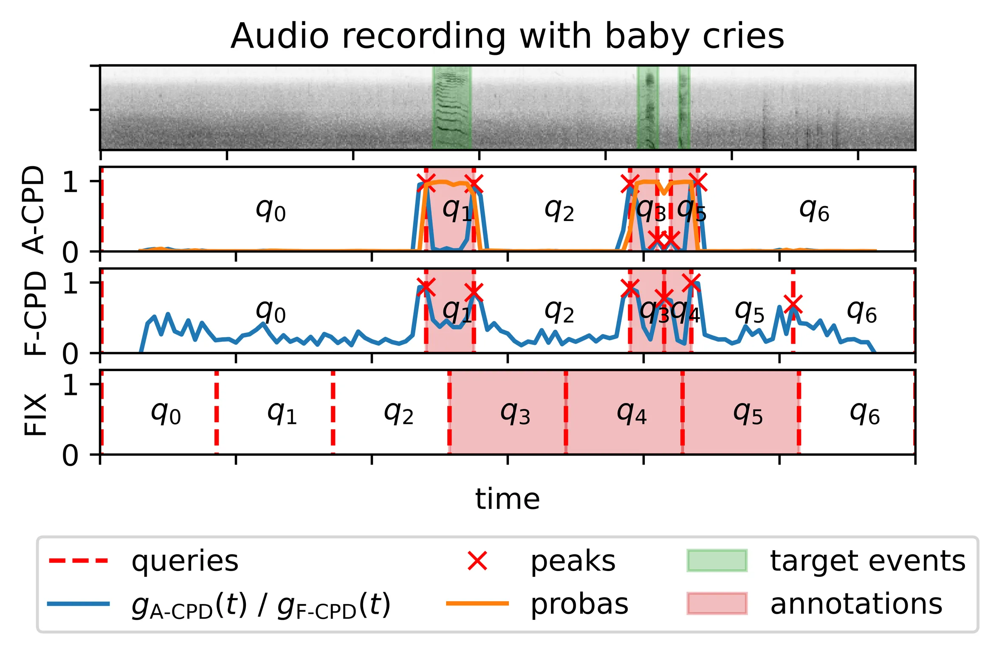
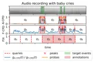
From weak to strong annotations
Mention video supervision for audio? (WIP)
- Work-in-progress note on using video/visual signals to guide or supervise audio models.
Zero-shot building footprint delineation
Additional eelgrass information
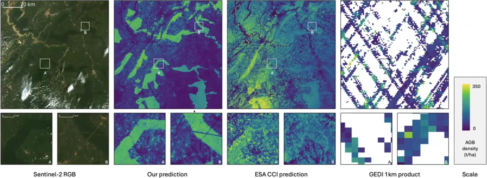
Above ground biomass estimation
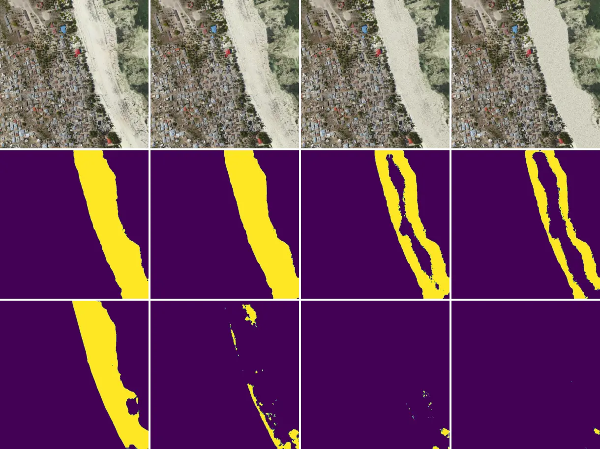
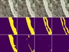
Robustness in ML for remote sensing
- Existing state-of-the art models
sensitive to pixel perturbations
- Relies on texture, context
- Not strong reliance on color
- Work published at ML4RS Workshop
at ICLR 2024
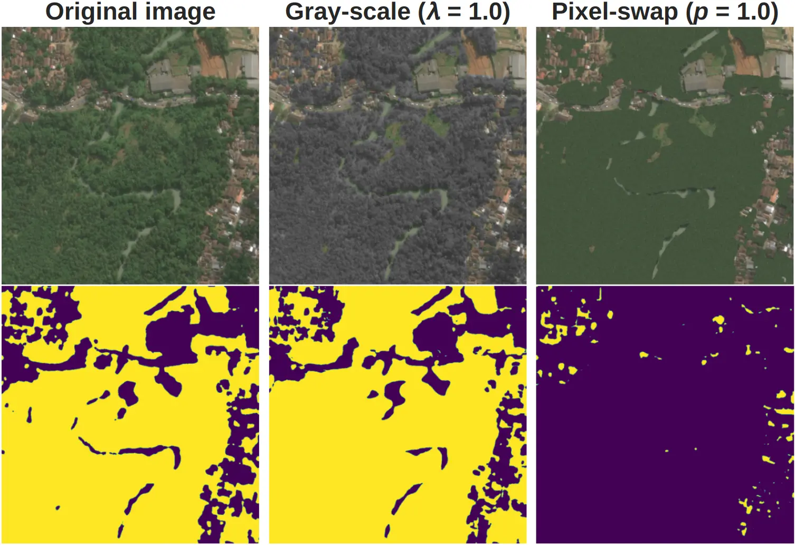
Robustness
of state-of-the-art earth observation models
Earth observation for extreme events
From Machine Learning to Large-Scale EO Products, arXiv:2607.24532).?
Learning from privileged modalities for high-resolution mapping using low-resolution inputs
An application in flood mapping (TerraBytes-II)
This work aims to explore the extent to which information learned from high-resolution images can be effectively transferred to models operating only on low-resolution data at inference for high-resolution mapping. In this preliminary work, we started with knowledge distillation and flood mapping, but we plan to extend this to several more privileged learning methods across a range of remote sensing application
Maybe keep this. Unsure.